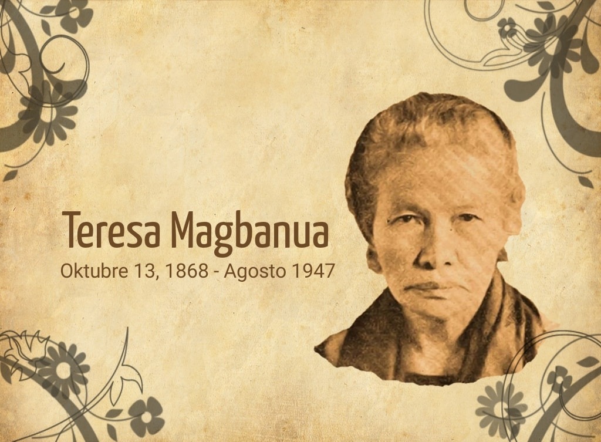

Teresa Magbanua
Visayan Joan of Arc

Teresa Magbanua, often referred to as the "Visayan Joan of Arc,"
was a revolutionary leader who played a significant role in the Philippine
Revolution, the Philippine-American War, and the fight against Japanese
occupation
Teresa Magbanua's Life Time Line:
- 1868: - October 13: Born in Pototan, Iloilo, Philippines
- 1880: - In the early 1880s she attended elementary school in her hometown. later, moved to Jaro, Iloilo, to continue her education at the Colegio de San José.
- 1894: - Graduated from Colegio de Santa Rosa in Manila.
- 1896: - Joined the Katipunan and participated in the Philippine Revolution against Spain.
- 1897: - Led troops in several battles, including the Battle of Barrio Yoting and the Battle of Sapong Hills.
- 1898: - Continued her fight against Spanish forces under General Martin Delgado.
- 1901: - Fought against American forces during the Philippine-American War, including the Battle of Iloilo City and the Battle of Balantang.
- 1941: - Participated in the resistance against Japanese occupation during World War II.
- 1947: - Passed away in Pagadian, Zamboanga.
"Courage is not the absence of fear, but rather the judgment that something else is more important than fear."
— Ambrose Redmoon
For more info, you can read more about her life on wikipedia.